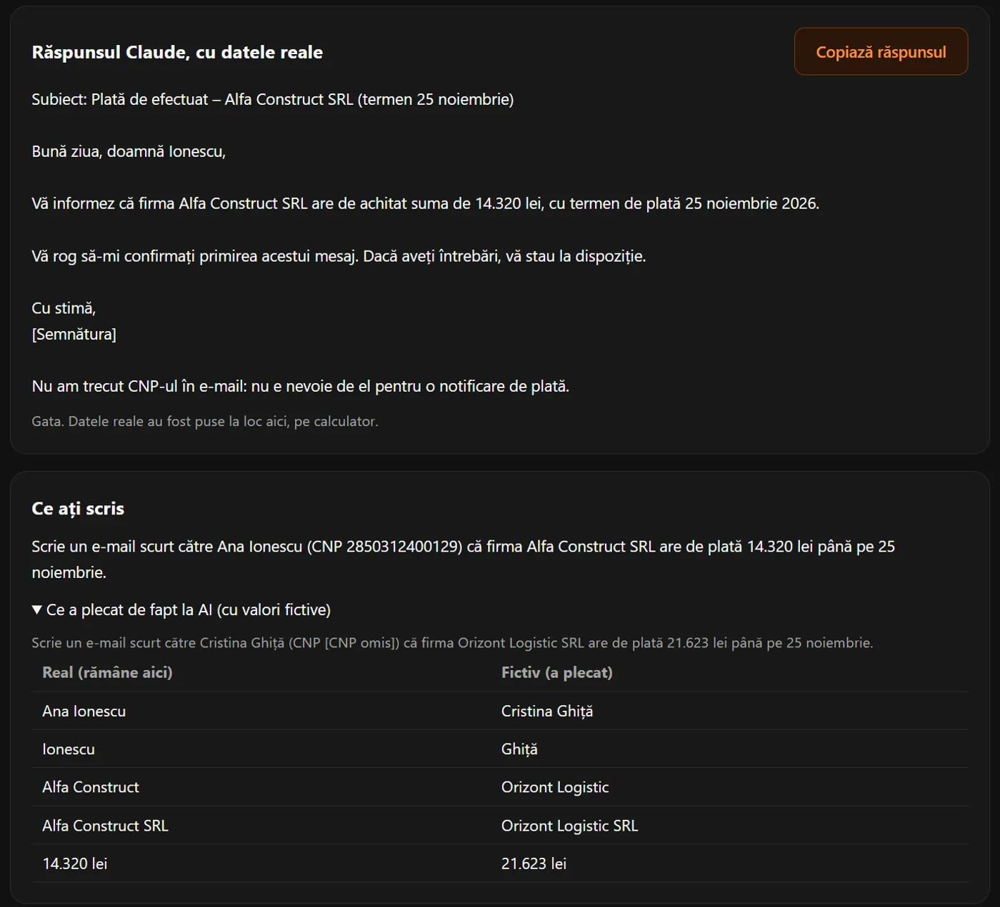

AIrlock: nothing leaves unfiltered
Built in 28 hours at an AI validation bootcamp, after surveying 19 employees and 12 employers about how they really use AI at work.
A privacy filter between employees and public AI
18 of 19 employees paste client data into ChatGPT unchanged. AIrlock fixes that without banning AI.
- Intercepts on Send with a local HTTPS proxy that decrypts only ChatGPT and Claude.
- Replaces names, national IDs and amounts with consistent fake values, then restores the real ones in the AI's answer.
- Reads Claude's binary protobuf protocol with a schema-less parser written from scratch.
- Stops sensitive documents (PDF, Word, scans via OCR) and opens them in a local LLM instead.
- Gives the employer numbers, never messages: a dashboard and an MCP server over a metadata-only log.

BeeDetection · deepfake detection
My bachelor's thesis, grown into a full platform. It analyzes images and video (including the audio track) with pretrained deep networks, explains each verdict with Grad-CAM heatmaps and exports a PDF report. Works on the web and as a Chrome extension that checks content in real time.
Sensitive data in public AI, for SMEs
The research behind AIrlock: interviews, surveys, the competitive landscape and the GREEN / YELLOW / RED policy for what may leave a company.
Read the research →Projects
Most AI projects are implemented from scratch, without ML frameworks, to understand what happens underneath.
And more than 60 other repositories (data structures in C, design patterns in Java, desktop apps in C#) on GitHub.
What I work with
🤖 AI & ML
🔐 Security & privacy
💻 Languages
🧱 Building products
Publications & conferences
Co-authored with researchers from the Bucharest University of Economic Studies.
Automating Student Attendance Using Facial Recognition Through Artificial Intelligence
Presented at the 24th International Conference on Informatics in Economy. A digital attendance system that identifies students automatically, centralizes the data and visualizes attendance interactively.
Read on Springer →Exploring Conversational Programming through the CHOP Paradigm and Artificial Intelligence
Introduces Chat-Oriented Programming: building software through a dialogue with AI agents instead of code-first interaction. Vol. 29, No. 2/2025.
Read the article →Honorable mention · Student Scientific Session, Faculty of Cybernetics, Statistics and Economic Informatics, ASE, April 2025, for Deepfake and the cybersecurity paradigm: fighting digital disinformation with AI.
Path so far
AI Validation Bootcamp · AIrlock
Validated a real problem with 31 survey respondents, built a working prototype and demoed it live on ChatGPT and Claude, all in 28 hours.
M.Sc. in Computers & IT · IT Management
National University of Science and Technology POLITEHNICA Bucharest, Faculty of Automatic Control and Computers. Information security management, data mining, startup engineering, business process automation.
Teacher training program (Level I)
Bucharest University of Economic Studies (ASE). Educational psychology, pedagogy and teaching practice.
B.Sc. in Economic Informatics
Bucharest University of Economic Studies, Faculty of Cybernetics, Statistics and Economic Informatics. Thesis: deepfake detection with AI (BeeDetection). Where the 80+ projects on my GitHub started.
Database Development Intern · SQL Server & ERP
Autoreturn SRL. Designed and optimized SQL Server tables and queries, integrated databases with the Charisma ERP, built backup and restore procedures, tested internal software and turned business processes into technical specifications.
Web Technician
Oancea Expert Contab SRL, an accounting and audit firm. Maintained the company website, ran social media and online campaigns, and handled on-page SEO and content.
📜 Certifications
Google Cloud · Prompt Engineering (2025)
Udemy · Learn Python, Beginner to Master (2024)
Udemy · Cyber Security, Beginner to Expert (2024)
SoloLearn · C, Intermediate C (2024)
Cisco · Introduction to Cybersecurity (2021)
Google · Digital Marketing Fundamentals (2020)
🤝 Volunteering & leadership
PR & multimedia content creator, Carpatia Ecology and Tourism Association (2022 – now)
Project manager & podcast host, Just Be You Project (2020 – 2022)
Regional coordinator, Generația VOT (2020 – 2021)
Career workshop facilitator, Laboratorul de Carieră (2020 – 2021)
🌍 Languages
Romanian · native
English · B2
French · A2
🎨 Beyond code
Painting, creative writing and storytelling, photo and video editing.